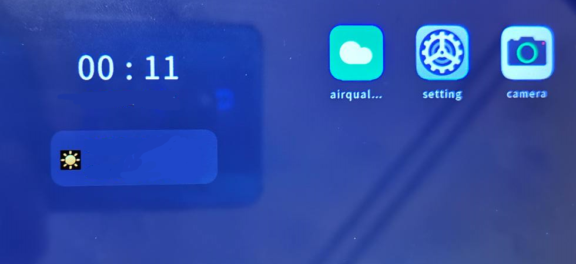

Running on the Device¶
For details about the development board, compilation, burning, and image running process, see Getting Started with Hi3516. After image running is executed and the system is started normally, perform the following steps to install or uninstall the third-party application:
Store the unsigned application installation package and installation tool compiled by the IDE in an SD card. (IP camera applications currently do not support signature.) The installation tool is in dev_tools in the directory where the image file is generated.
Run the ./sdcard/dev_tools/bin/bm set -s disable command to disable signature verification.
Run the ./sdcard/dev_tools/bin/bm install -p /sdcard/airquality.hap command to install the application.
The dev_tools directory stores the installation tool, and airquality.hap is the application installation package.
After the application is installed, touch the application icon on the home screen to start the application.
Figure 1 Home screen(Optional) Uninstall the application.
Touch and hold the application icon on the home screen, and touch the uninstall button in the displayed menu.